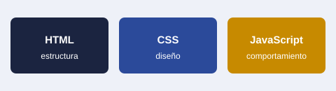

Mis datos
Panel del administrador
| Estudiante | Correo | Intentos | Mejor nota |
|---|
Introducción a la programación web
Módulo 1. Cómo funciona la web
Cuando escribes una dirección en el navegador, tu computadora le pide una página a un servidor y este responde con archivos. Cada página se construye con tres lenguajes que se reparten el trabajo.

Para profundizar, revisa la guía de aprendizaje de MDN.
Módulo 2. HTML y CSS
HTML organiza el contenido con etiquetas como títulos, párrafos, listas y enlaces. El atributo href de la etiqueta a indica a dónde lleva cada enlace. CSS se encarga del aspecto: colores, tamaños y posición, por ejemplo con la propiedad color.
Referencias: HTML en MDN y CSS en MDN.
Módulo 3. JavaScript y hosting
JavaScript se ejecuta en el navegador y permite validar formularios, guardar datos y reaccionar a lo que hace la persona. Para publicar un sitio estático puedes usar servicios gratuitos como GitHub Pages.
Más información: GitHub Pages.
Evaluación
Son 7 preguntas. Necesitas 70 puntos para aprobar y obtener tu diploma.
Resultado
El Instituto ProGramador certifica que
aprobó el curso Introducción a la programación web con una nota de .